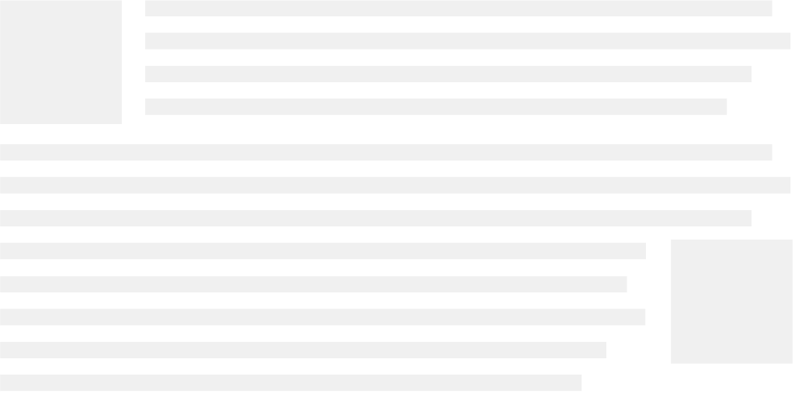
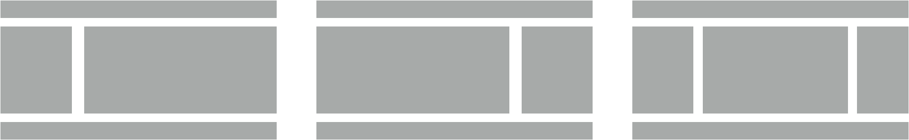
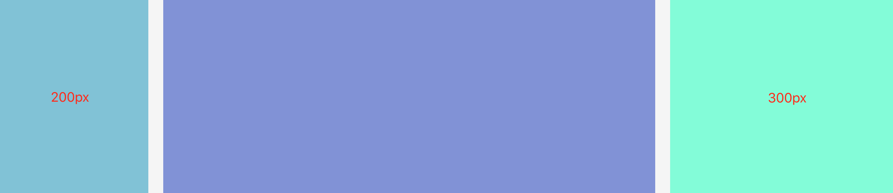
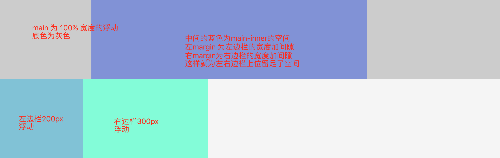
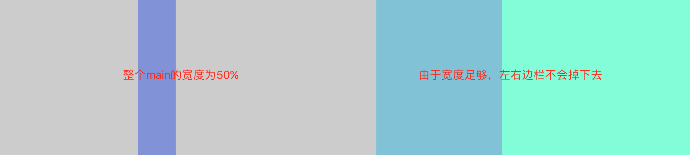

Floats
概述
Float 属性指定一个元素应沿其容器的左侧或右侧放置，允许文本和内联元素环绕它。原本设计是为了实现文字环绕图片的效果（报纸上常见的效果），大概如下图（灰色块表示图片，灰色行表示文字）：

但是在那个没有 flexbox 的年代，就得靠大家各自发挥想象力来实现了各种效果了，于是又了下面这样的列表：

还有这样的布局：

上面的几种效果简单 demo 可见：
就这样 float 既肩负着布局的使命，也遭受着无数的谩骂，然后越走越远。
改变 display 计算值
由于 float 意味着使用块布局，某些情况下它会修改 display 值的计算值。如 inline、inline-block 都会成为 block。所以如果行内级元素设置float，是不需要再去设置 display 的，如下面代码：
span {
float: left;
display: inline-block; /* 多余的设置 */
}
如何定位
当一个元素浮动之后，它会被移出正常的文档流，然后向左或向右平移，一直碰到所处的容器块的边缘，或者碰到另外一个浮动的元素。如果有个行盒，则对齐于行盒的顶部。原文如下：
“A floated box is shifted to the left or right until its outer edge touches the containing block edge or the outer edge of another float. If there is a line box, the outer top of the floated box is aligned with the top of the current line box.”
一般的浮动效果，这里就忽略了，下面主要探讨下如果有行盒的情况，效果图如下（demo）：
从上面的 demo 中，我们可以看到如果浮动元素的上一个兄弟元素是块级元素的，浮动元素直接在新的一行进行左右平移。而如果浮动元素的上一个兄弟元素是行内级元素的话，就涉及到行盒的情况了，那么就在当前行盒进行左右平移，且外顶部对齐当前行盒的顶部。
最后，如果浮动元素比较多的话，会一个接一个，直到填满容器一整行，之后换行至下一行。

更多具体规则请参考：positioning the float
清除浮动
Float 为什么会遭受无数的谩骂，这很大程度跟它带来的两个问题有关：
- 对后面的元素布局产生影响
- 父元素的高度坍塌
而解决这两个问题的方案，我们可以统称为清除浮动：清除前面兄弟元素浮动和闭合子元素浮动（解决父元素高度坍塌）。
清除前面兄弟元素浮动
清除前面兄弟元素浮动很简单，只需要在不想受到浮动元素影响的元素上使用 clear:both 即可， HTML & CSS 代码如下：
<div class="fl">我是左浮动元素</div>
<div class="fr">我是右浮动元素</div>
<div class="cb">我不受浮动元素的影响</div>
.fl {
float: left;
}
.fr {
float: right;
}
.cb {
clear: both;
}
在 CSS2 以前，clear 的原理为自动增加元素的上外边距（margin-top）值，使之最后落在浮动元素的下面。在 CSS2.1 中引入了一个清除区域（clearance）——在元素上外边距之上增加的额外间距，使之最后落在浮动元素的下面。所以如果需要设置浮动元素与 clear 元素的间距，得设置浮动的元素的 margin-bottom，而不是 clear 元素的 margin-top。
demo 可见：clear 清除浮动
闭合子元素浮动
我们知道，在计算页面排版的时候，如果没有设置父元素的高度，那么该父元素的高度是由他的子元素高度撑开的。但是如果子元素是设置了浮动，脱离了文档流，那么父元素计算高度的时候就会忽略该子元素，甚至当所有子元素都是浮动的时候，就会出现父元素高度为 0 的情况，这就是所谓的父元素高度坍塌问题。为了能让父元素正确包裹子元素的高度，不发生坍塌，我们就需要闭合子元素的浮动。
一般我们有两种办法可以用来闭合子元素浮动：
- 给最后一个元素设置
clear: both - 给父元素新建一个 BFC
clear:both
由于我们最后一个元素使用 clear:both，所以该元素就能不受浮动元素影响出现在父元素的最底部，而父元素计算高度的时候需要考虑到这个正常元素的位置，所以高度自然包裹到了最底部，也就没有了坍塌。
对于这个方法，以前我们是利用新增一个空元素（<b> 或 <span> 或 <div> 等）来实现的，如下：
<div class="container">
<div class="box"></div>
<span class="clear-box"></span>
</div>
.box {
float: left;
}
.clear-box {
clear: both;
}
虽然这种办法比较直观，但是不是很优雅，因为增加了一个无用的空白标签，比较冗余而且不方便后期维护（一般不太建议使用该办法）。所以后期有了通过父元素的伪元素（::after）实现的著名 clearfix 方法，代码如下：
<div class="container clearfix">
<div class="box"></div>
</div>
.clearfix::after {
content:"";
display:table;
clear: both;
}
上面方法给父元素增加一个专门用于处理闭合子元素浮动的 clearfix 类名，该类使用 ::after 伪元素类选择器增加一个内容为空的结构来清除浮动，可能你们比较疑惑的是为什么要设置 display:table 属性，这其实涉及到一个比较复杂的进化过程，具体可以参考资料——clearfix浮动进化史
新建 BFC
该方法的原理是：父元素在新建一个 BFC 时，其高度计算时会把浮动子元素的包进来。
下面我们以实例为证：如下图我们的图片为浮动，父元素 article 的高度就出现了坍塌（没有包括图片），而根元素 HTML （默认情况下我们的根元素 HTML 就是一个 BFC）的高度则包括了图片的高度。


既然新建一个 BFC 可以解决父元素高度坍陷问题，那就好办了，前面文章中我们提到的那么多新建 BFC 的办法就有用武之地了。不过一般我习惯常用的就是 overflow: hidden，代码如下：
<div class="container">
<div class="box"></div>
</div
.container {
overflow: hidden;
}
.box {
float: left;
}
负 margin 布局
如果说前面的清除浮动是基础必备技能，那么这个负 margin 与 float 的综合应用就有点属于高级技能了。它尤其适合在流体布局中。
我们具体以一个实例来详细了解下（demo）：

如上图，左边栏宽度为200px，右边栏宽度为 300px，内容栏的宽度等于浏览器的宽度扣除左右边栏与中间间距的宽度，由于浏览器宽度的可变性，所以内容栏宽度是可变的。
在 CSS2 年代，不能 calc 也不能 flex，唯一的能用的也就是嵌套层级了，一个层级不行我就再套一个。
HTML 代码如下：
<div class="main">
<div class="main-inner"></div>
</div>
<!-- 边栏将会使用负 margin 回到该显示的位置 -->
<div class="aside-left">
</div>
<div class="aside-right">
</div>
样式的核心思想是，main 为浮动的 100% 宽度，然后左边边栏的空间通过 main-inner 的左右 margin 来空出来，最后给浮动的左右边栏设置负的 margin 回到视觉效果的位置上。
先来实现第一步，设置浮动，将左边边栏的位置空出来，大概效果如下（由于 main 的宽度为 100%，所以 left 和 right 就换行显示了，掉了下来）：

CSS 代码如下：
.main,
.aside-left,
.aside-right {
float: left;
}
.main {
width: 100%;
}
.main-inner {
margin-left: 220px;
margin-right: 320px;
}
.aside-left {
width: 200px;
}
.aside-right {
width: 300px;
}
再来实现第二步，通过负 margin 把掉下来的拉回去。
.aside-left {
width: 200px;
margin-left: -100%; /* 拉到左边栏位置 */
}
.aside-right {
width: 300px;
margin-left: -300px; /* 拉到右边栏位置 */
}
当然这涉及到一个问题：为什么负 margin 能够把掉下去的内容拉起来呢？
简单来说，这是因为它的换行是因为内容挤不下，所以掉下去了，跟行内元素有点相似，而不像是块级元素那样，是硬性的换行。
如下图，如果设置 main 为 50% 的宽度，左右边栏就不会掉了，如果这个时候我们再演示负的 margin-left 就可以很清楚了：

而块级元素的换行是强行的换行，并不是内容的多少，哪怕你前面的块级元素只有10px的宽度，下面的块级元素也只有10px，该换行还是会换行，它的负左右 margin 就是直接在本行进行偏移了，偏移的值再多也是在本行。
如下两个块级元素，宽度再小也是独占一行，所以左右的负 margin 也就只能在本行进行偏移了：
<div style="width: 10px;height: 10px;"><div>
<div style="width: 10px;height: 10px;"><div>